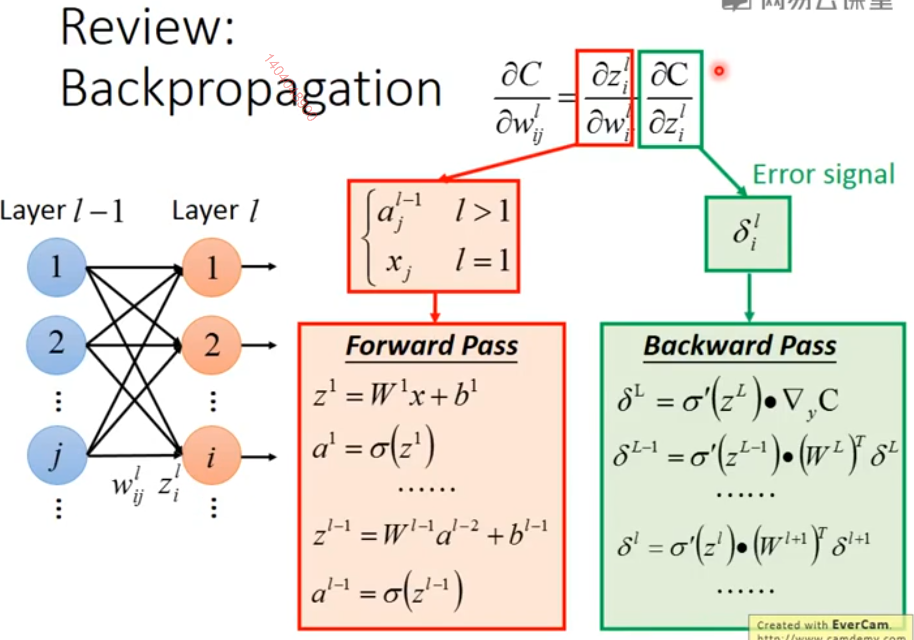
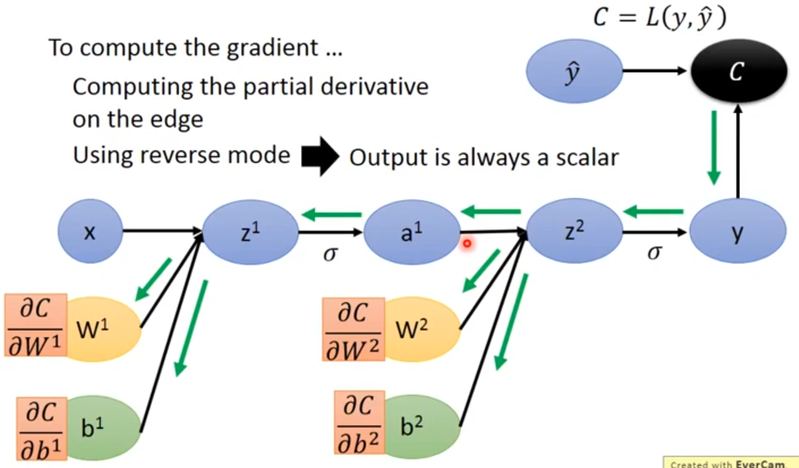
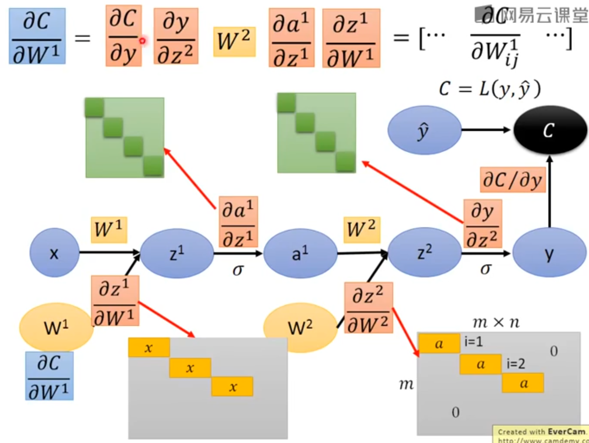

这一节将6.5.4的算法进一步细化。
假设这是一个三层的MLP网络。
输入层：X
隐藏层：参数为W(1)，输入为X，激活函数为H=max{0, XW(1)}
输出层：参数为W(2)，输入为H，用于计算类的非归一化对数的概率。
[?]类的非归一化对数概率？
JMLE为非归一化的对数概率的交叉熵。
正则项为W(1)和W(2)的二阶范式。
最终cost为：
J=JMLE+λ(i,j∑(Wi,j(1))2+(Wi,j(2))2)
图为这个网络的正反传播的计算图：

[?]反向传播算法可以自动生成梯度？这句话什么意思？
作为一个例子，我们利用反向传播算法来训练多层感知机。
这里，我们考虑一个具有单个隐藏层的非常简单的多层感知机。
为了训练这个模型，我们将使用小批量随机梯度下降算法。
反向传播算法用于计算单个小批量上的代价的梯度。
[sucess]

∇yC=[∂y1∂C∂y2∂C⋯∂yn∂C]⊤
具体来说，我们使用训练集上的一小批量实例，将其规范化为一个设计矩阵X以及相关联的类标签向量y。
网络计算隐藏特征层H=max{0,XW(1)}。
为了简化表示，我们在这个模型中不使用偏置。
假设我们的图语言包含relu操作，该操作可以对max{0,Z}表达式的每个元素分别进行计算。
类的非归一化对数概率的预测将随后由HW(2) 给出。
假设我们的图语言包含cross_entropy操作，用以计算目标y和由这些未归一化对数概率定义的概率分布间的交叉熵。
所得到的交叉熵定义了代价函数JMLE。最小化这个交叉熵将执行对分类器的最大似然估计。
[success] 分类问题的交叉熵代价函数
假设真实结果为y^=000⋯1⋯0]，1在第r个位置
预测结果为y。
交叉熵代价为C=−logyr，其中y来自预测结果，r来自真实结果
具体来说：
∂yi∂C==−yr10i=ri≠r
然而，为了使得这个例子更加真实，我们也包含一个正则项。
总的代价函数为
J=JMLE+λ(i,j∑(Wi,j(1))2+i,j∑(Wi,j(2))2)
包含了交叉熵和系数为λ的权重衰减项。
它的计算图在图6.11中给出。
[success] 网上找了不带正则化的计算图

图中的上标1、2不是幂的意思。
∂y∂C在上面已经讲过
∂z(2)∂y是一个Jacobian矩阵。i=j时，∂zj(2)∂yi=激活函数的偏导。i≠j时偏导为0。（如果激活函数是softmax函数，这个矩阵就不是对角矩阵了）。
∂aj(1)∂zi(i)=Wij2
∂W(2)∂z(2)是一个三维的张量。i=j时，∂Wjk(2)∂zi(i)=ak(1)。i≠j时偏导为0。

这个示例的梯度计算图实在太大，以致绘制或者阅读都将是乏味的。
这显示出了反向传播算法的优点之一，即它可以自动生成梯度，而这种计算对于软件工程师来说需要进行直观但冗长的手动推导。
[warning] 自动生成梯度？
我们可以通过观察图6.11中的正向传播图来粗略地描述反向传播算法的行为。
为了训练，我们希望计算∇W(1)J和∇W(2)J。
有两种不同的路径从J后退到权重：一条通过交叉熵代价，另一条通过权重衰减代价。
权重衰减代价相对简单，它总是对W(i)上的梯度贡献2λW(i)。
另一条通过交叉熵代价的路径稍微复杂一些。
令G是由cross_entropy操作提供的对未归一化对数概率U(2)的梯度。
反向传播算法现在需要探索两个不同的分支。
在较短的分支上，它使用对矩阵乘法的第二个变量的反向传播规则，将H⊤G加到W(2)的梯度上。
另一条更长些的路径沿着网络逐步下降。
首先，反向传播算法使用对矩阵乘法的第一个变量的反向传播规则，计算∇HJ=GW(2)⊤。
接下来，relu操作使用其反向传播规则对先前梯度的部分位置清零，这些位置对应着U(1)中所有小于0的元素。记上述结果为G′。
反向传播算法的最后一步是使用对matmul操作的第二个变量的反向传播规则，将X⊤G′加到W(1)的梯度上。
[warning] 这一段没看懂？
在计算了这些梯度以后，梯度下降算法或者其他优化算法所要做的就是使用这些梯度来更新参数。
对于MLP，计算成本主要来源于矩阵乘法。
在前向传播阶段，我们乘以每个权重矩阵，得到了O(w)数量的乘-加，其中w是权重的数量。
在反向传播阶段，我们乘以每个权重矩阵的转置，这具有相同的计算成本。
算法主要的存储成本是我们需要将输入存储到隐藏层的非线性中去。
这些值从被计算时开始存储，直到反向过程回到了同一点。
因此存储成本是O(mnh)，其中m是小批量中样本的数目，nh是隐藏单元的数量。